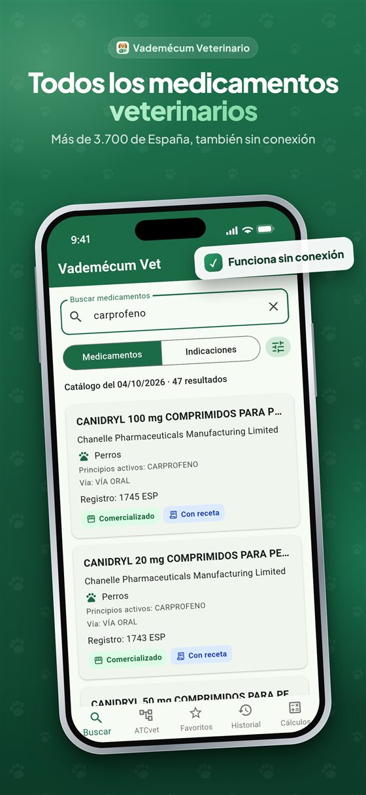
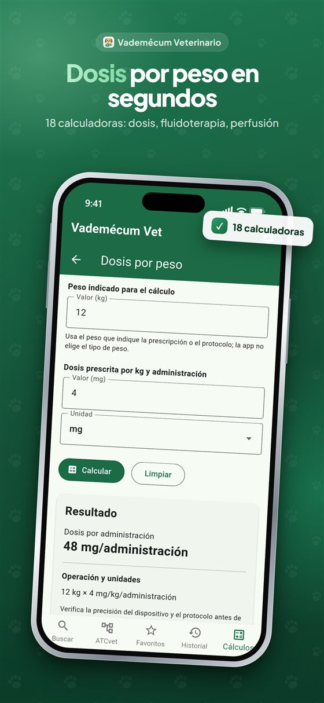
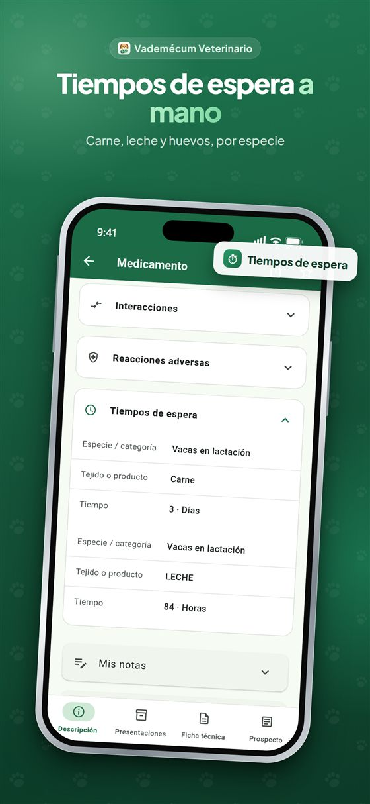

Para veterinarios, ATV y estudiantes
Vademécum veterinario: la dosis en 10 segundos, también sin cobertura
Los más de 3.700 medicamentos veterinarios autorizados en España, con los datos públicos de CIMAVet (AEMPS) actualizados a diario. Ficha técnica, prospecto, indicaciones y tiempos de espera por especie, y 18 calculadoras. Sin conexión y sin registro.
Descargar en el App StoreDescargar en Google Play
La búsqueda del catálogo es gratis. Pro se prueba 7 días.
Lo que te pasa hoy, y lo que cambia
La app oficial no carga en la granja, o da error al escribir.
Todo el catálogo va en el móvil: busca y lee fichas sin cobertura.
La ficha técnica es un PDF de 30 páginas para encontrar un tiempo de espera.
Indicaciones, contraindicaciones y tiempos de espera por especie en la primera pantalla; el PDF, guardado para cuando lo quieras.
Otras apps piden NIF, suscripción a una revista o están en inglés.
Abres y buscas. Sin cuenta, sin publicidad, en castellano y con datos de España.
La dosis la calculas de cabeza entre dos consultas.
18 calculadoras con el cálculo a la vista: dosis por peso, fluidoterapia, perfusión continua, goteo, dilución.
Qué es gratis y qué incluye Pro
| Gratis, para siempre | Pro · 7,99 €/mes o 59,99 €/año |
|---|---|
| Búsqueda de los 3.700 medicamentos por nombre, principio activo, código nacional o registro | Ficha completa: composición, indicaciones por especie, contraindicaciones, reacciones adversas y tiempos de espera |
| Filtro por especie y grupos oficiales | Ficha técnica y prospecto en PDF, con buscador, guardados para leer sin conexión |
| Enlace a la ficha oficial de cada medicamento | Búsqueda por indicación (mastitis, otitis, dolor…) y árbol ATCvet |
| Todo sin conexión y sin registro | 18 calculadoras, comparación de dos medicamentos, favoritos con aviso de cambios, notas e historial |
Pro se prueba 7 días gratis y se cancela desde la tienda. Si caduca, tus favoritos y notas se conservan.



Descargar en el App StoreDescargar en Google Play
Para quién
Veterinarios clínicos de pequeños animales, de producción y de équidos; auxiliares técnicos veterinarios; estudiantes de veterinaria. Los datos son de referencia profesional y no sustituyen la ficha técnica oficial ni el criterio clínico.
Preguntas frecuentes
¿Qué es Vademecum Veterinario?
Una app para iPhone y Android con los más de 3.700 medicamentos veterinarios autorizados en España. De cada uno muestra la ficha técnica, el prospecto, las indicaciones y los tiempos de espera por especie, e incluye 18 calculadoras veterinarias.
¿Es la app oficial de CIMAVet o de la AEMPS?
No. Es un proyecto independiente que usa los datos públicos de CIMAVet, el centro de información de medicamentos veterinarios de la AEMPS, actualizados cada día. Cada medicamento enlaza a su ficha oficial.
¿Funciona sin conexión?
Sí. El catálogo completo va dentro del móvil, así que se puede buscar y leer fichas en la granja o en una consulta sin cobertura. En Pro, la ficha técnica y el prospecto en PDF también se guardan para leerlos sin conexión.
¿Dónde veo los tiempos de espera de un medicamento?
En la ficha de cada medicamento (Pro), separados por especie y por producto (carne, leche y huevos), sin tener que abrir el PDF de la ficha técnica.
¿Qué calculadoras incluye?
Dosis por peso, dosis a volumen, fluidoterapia (déficit, mantenimiento y plan de fluidos), perfusión continua (CRI), goteo, dilución, energía y ración, diuresis y conversiones, con el cálculo a la vista.
¿Cuánto cuesta?
Descargarla y buscar en todo el catálogo es gratis. Pro cuesta 7,99 € al mes o 59,99 € al año, se puede probar 7 días gratis y se cancela desde la tienda.
¿Hace falta registrarse o el número de colegiado?
No. La app no pide cuenta, NIF ni número de colegiado, y no tiene publicidad.
Quién la hace
Vademecum Veterinario es un proyecto independiente de Pau Sevilla Rodríguez (Impulsit), hecho en España. No está vinculado a la AEMPS ni a ningún organismo público: usa exclusivamente los datos públicos de CIMAVet. De la misma familia: Vademecum, para medicamentos de uso humano.
Contacto
Para dudas, compras o errores de contenido: pau.sevilla@icloud.com. También desde la app, en Ajustes → Contactar con soporte.